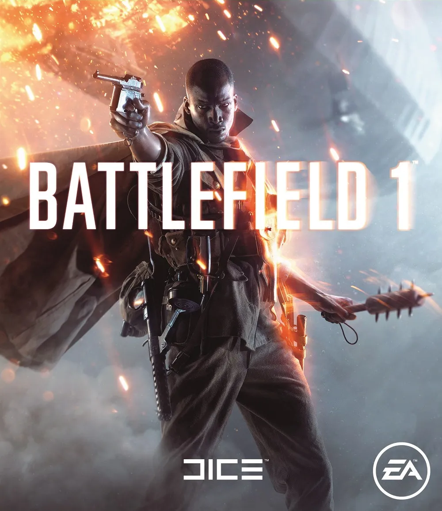
배틀필드 1, 1차대전을 소재로 한 게임인데.... 군복 관련해서는 고증이 엉망이다라는 평가를 받음...
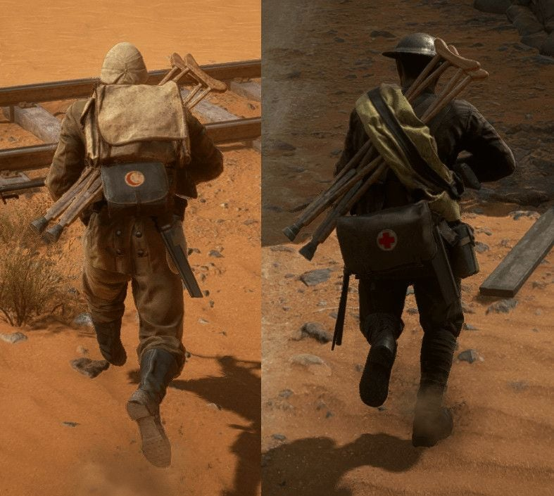
(적신월과 적십자 구급낭 구분 고증)
여기서 고증을 업그레이드한 모드가 있어서 한번 가져와봄
1. 대영제국군
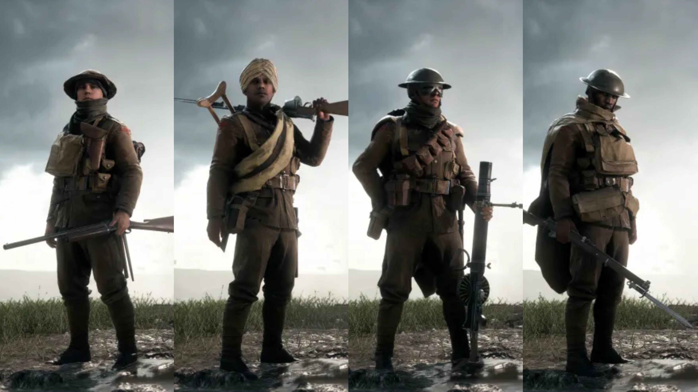
적용 전
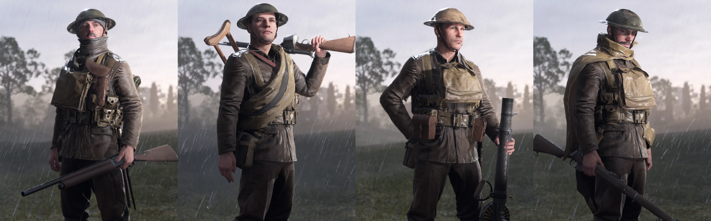
적용 후
2. 프랑스군
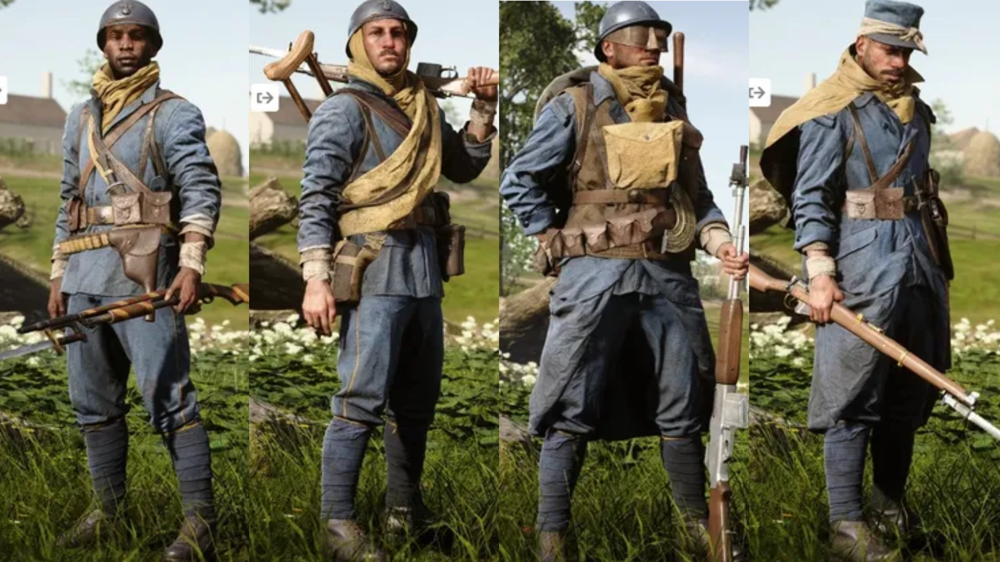
적용 전
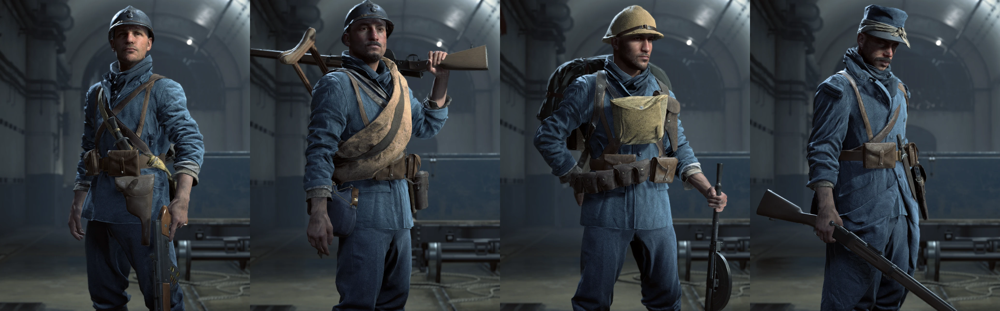
적용 후
3. 미합중국 국군
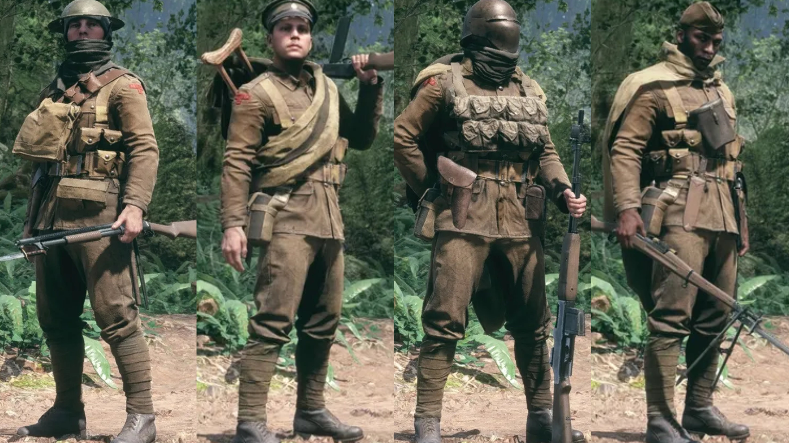
적용 전
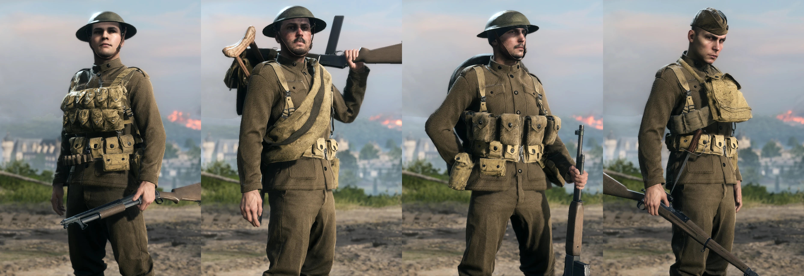
적용 후
4. 독일 제국군
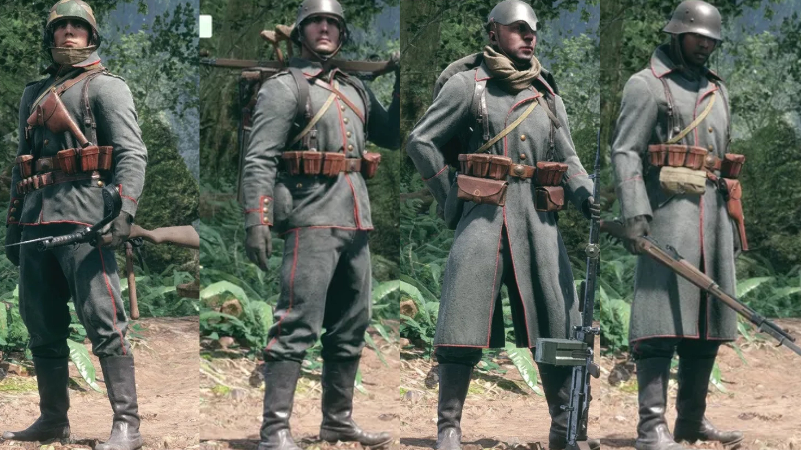
적용 전
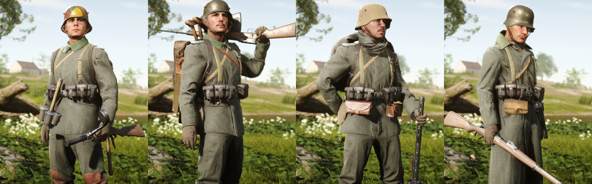
적용 후
5. 오스트리아 - 헝가리 제국군
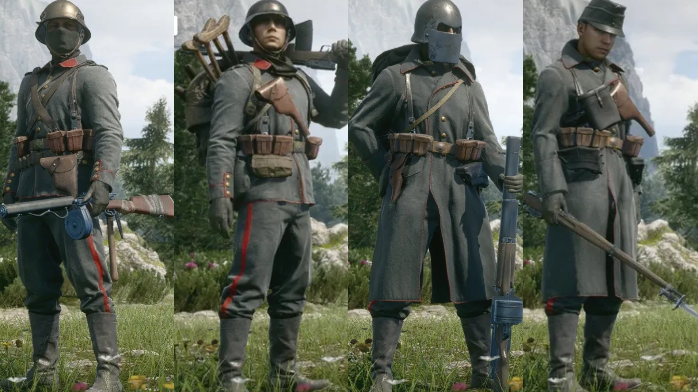
적용 전
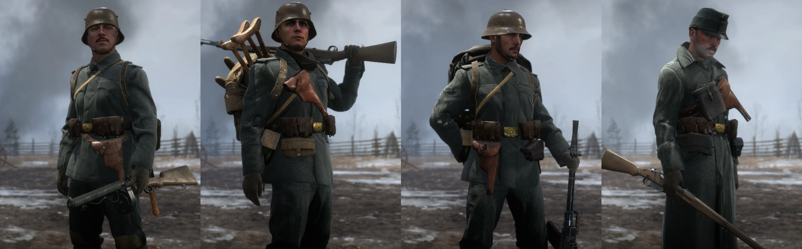
적용 후
6. 오스만 제국군
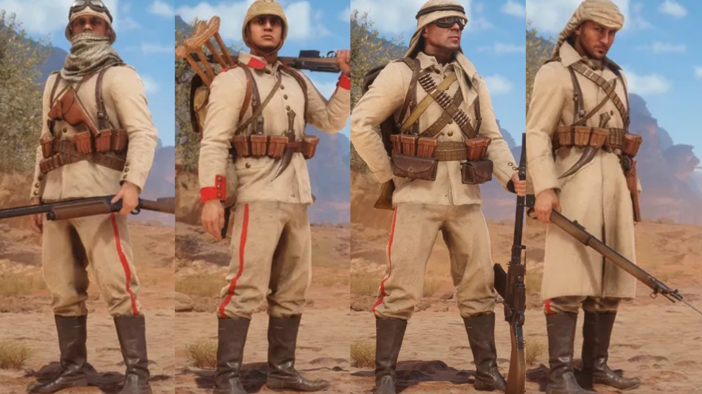
적용 전
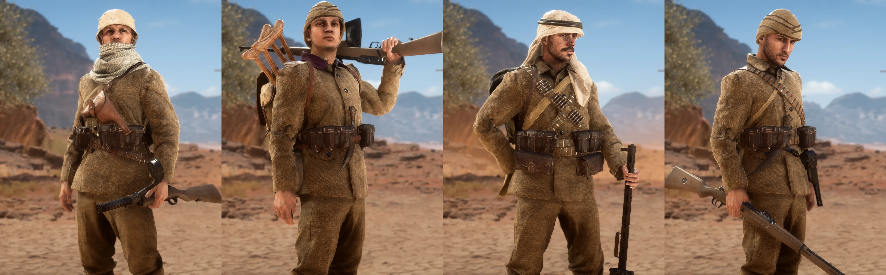
적용 후
개인적으로 보급병 주로 했지만 외형이 마음에 안들었는데....
모드 적용하니까 꽤 편안했음 ㄹㅇ....

한글만 지원해줬다면 좀 더 오래했을텐데
번역 없이도 플레이에 지장없지만 뭔가 손이안가